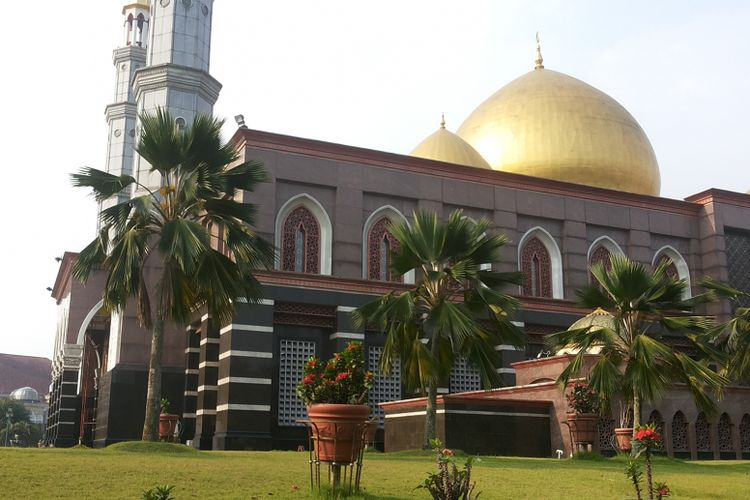
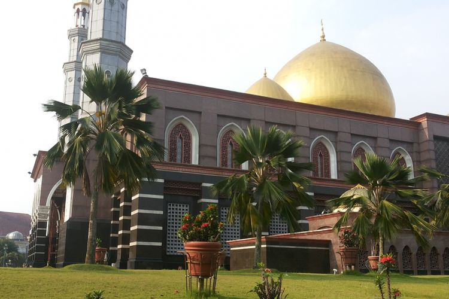
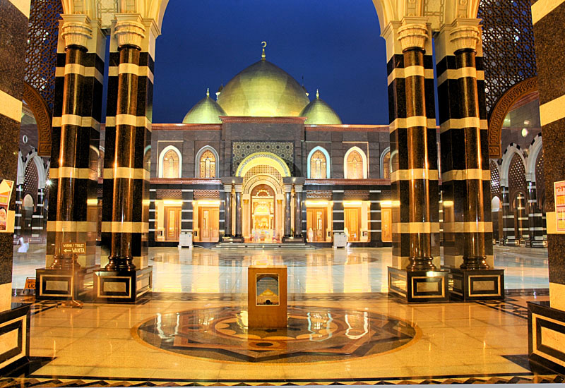
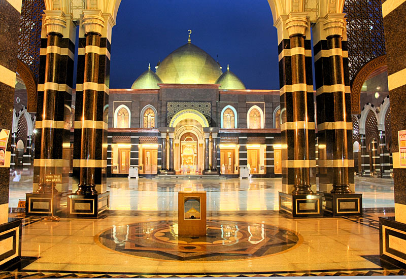

Direktori Data Masjid Kota Depok
 

 


- LAYANAN
-
- Lembaga Pengelolaan Zakat, Infak, Sedekah dan Wakaf
- Shalat Berjamaah
- Air Minum Gratis
- TPQ
- Pengajian Mingguan
- MCK Pria/Wanita
pos security kubah emas,
Jl. Meruyung Raya, Meruyung,
Kecamatan. Limo,
kota. Jawa Barat 16515
Testimoni & Komentar

Pengururs Masjid
Ini yang membuat masjid Dian Al Mahri cepat menjadi kesohor sejak diresmikan pada 31 Desember 2016. Ya karena kubah-kubahnya terbuat dari emas. Masjid Kubah Emas memiliki 5 kubah, satu kubah utama dan empat kubah kecil.
Gubernur Jawa Barat
Warna monokrom mendominasi ruang masjid dengan unsur utama warna krem, untuk memberi karakter ruang yang tenang dan hangat. Sementara bagian interiornya, masjid memilikipilar-pilar kokoh yang menjulang tinggi untuk memberikan kesan yang agung.
Warga
Kita patut berbangga, karena masjid ini disebut sebagai masjid termegah di Asia Tenggara. Banyak orang sekitar atau bahkan dari luar daerah melakukan wisata ziarah atau sekadar ingin merasakan shalat di masjid yang kokoh dan indah di Kota Depok, Jawa Barat ini.